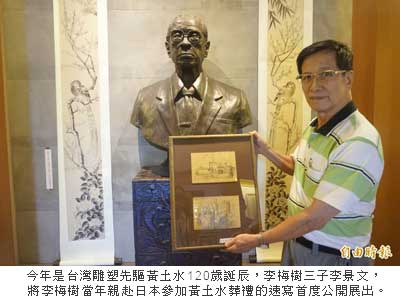
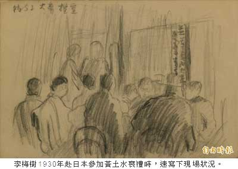
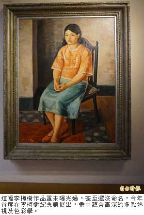

李梅樹速寫黃土水葬禮 紀念館首展出
張安蕎｜自由時報／新北都會生活｜2015年10月6日
今年是台灣雕塑先驅黃土水120歲誕辰，為緬懷這名早逝的天才雕塑家，李梅樹紀念館特別公開2張李梅樹的速寫真跡，上頭繪有李梅樹親赴日本參加黃土水葬禮的所見所聞，也揭露當年台灣藝術家到日本求學的不易之處。
1920年黃土水入選日本「帝國美術展覽會」，成為第一位入選該展的台灣美術家，讓李梅樹、陳澄波等習畫青年，也興起到日本求學的念頭，由於受到家人反對，李梅樹直到1929年才考進東京美術學校，未料隔年黃土水即因病去世，他在參與葬禮時，悲痛地速寫下守夜及親友等待火葬的樣貌。
李梅樹三子李景文感嘆，當年的藝術家大多都英年早逝，父親一直到80歲才告知，沒有買下黃土水在日本的工作室，可能導致許多作品佚失，讓李梅樹感到相當遺憾。
另外，紀念館今年也將李梅樹過去從未曝光過的兩幅油畫公開展出，其中一幅為《看畫的小孩》、另一幅則尚未取名，皆為1930至40年代所繪，作品中可看到當年台灣在日本殖民下的流行服飾；作品《編物》也在砸重金維護後，再度公開展出。
李景文說，這些作品都蘊含高深的多點透視及色彩學，畫裡的人物都像有生命一般，觀者從前、後、左、右等各個角度看畫，都會有不同的發現，充滿趣味及驚奇感，一定親睹真跡才可感受。